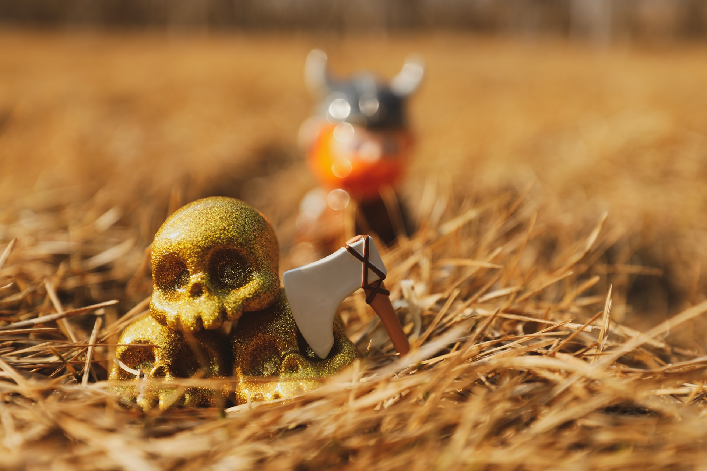

"Welcome to 'Odin Recipes: A Culinary Expedition into the Viking Age'! Prepare to step into a world where history and flavors converge, as we uncover the culinary delights of the fearless Vikings.
Our digital longhouse is a gateway to an era of robust feasting with a modern twist. Join us on a voyage of the senses, where earthy aromas and rich tastes tell the story of seafaring warriors and their epicurean prowess.
So, with culinary curiosity as your guide, let us embark together on a flavorful journey that transcends time."
4 Easy Cook Viking Courses
"Welcome to 'Odin Recipes: A Culinary Expedition into the Viking Age'! Prepare to step into a world where history and flavors converge, as we uncover the culinary delights of the fearless Vikings.
Our digital longhouse is a gateway to an era of robust feasting with a modern twist. Join us on a voyage of the senses, where earthy aromas and rich tastes tell the story of seafaring warriors and their epicurean prowess.
So, with culinary curiosity as your guide, let us embark together on a flavorful journey that transcends time."